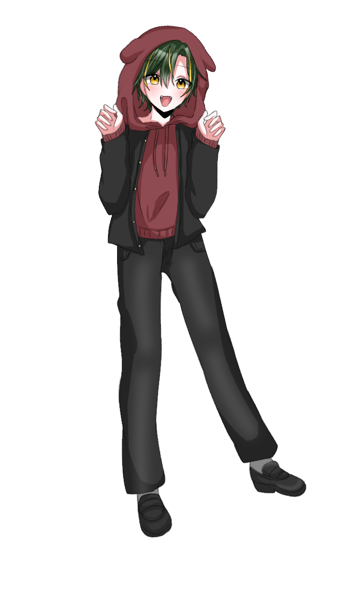

明るく人当たりの良い、いわゆるカースト上位に位置する陽キャ。 いつも明るく振る舞い、場の空気を和ませることが得意。 周囲との距離を縮めることにも長けており、自然と人の輪の中にいるタイプである。
家族には社会人の姉がいる。 姉からは幼い頃から、少々鬱陶しいと思うほど可愛がられて育った。 廿楽自身も姉のことを嫌っているわけではないものの、 姉と関わると何かと面倒だと感じることがある。
そんな経験から、「もし自分に弟がいたとしても、姉のような接し方はしない」と強く思っている。 しかし、実際には相手を過剰に可愛がってしまう性格であり、 自分に弟がいたなら間違いなく同じように可愛がっていたと思われる。 ただし、本人にはその自覚がほとんどない。
家族構成は、母、父、姉、廿楽の四人。 母はパート勤務のため家を空けることが多く、 父は単身赴任をしている。 姉も社会人になってからは一人暮らしをしているため、 家族全員が揃って過ごす機会は少ない。
相方PCとは同い年だが、誕生日の時期が異なるため、 実際には廿楽の方が一年ほど年上になる。 幼い頃に年齢の違いを知ったことをきっかけに、 自分の方が年上なら「自分がお兄ちゃんだ」と考えるようになった。 もともと弟が欲しいという願望もあったため、 相方PCに対しては自然と兄のように振る舞うようになった。
そのため、相方PCに対しては何かと世話を焼いたり、 年上らしく振る舞おうとしたりする。 本人はごく自然に「お兄ちゃん」として接しているつもりだが、 その言動はかなり過保護で、実の姉から受けてきた扱いと大差ない。
明るく快活な性格の一方で、 大切な家族や身近な人との繋がりを非常に大事にしている。 「なくなること」を嫌うのも、 自分にとって大切なものが失われることへの強い抵抗感から来ている。